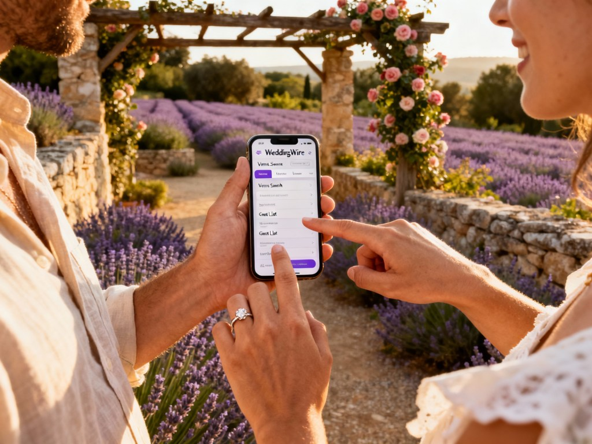
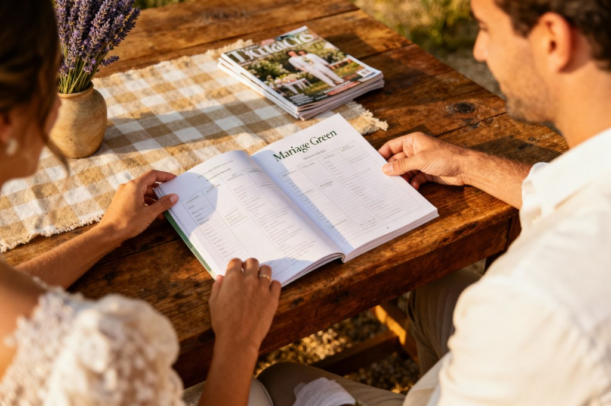

Des solutions pratiques pour une planification sans stress
Organiser un mariage peut vite devenir un vrai casse-tête : prestataires à contacter, budget à suivre, invités à gérer, idées à trier… Pour garder le contrôle sans y laisser toute votre énergie, les bons outils font une énorme différence. Que vous soyez adepte du numérique ou fan de papeterie, il existe aujourd’hui des solutions simples, accessibles et adaptées à chaque style d’organisation.
Voici une sélection actualisée (2025) d’outils pour vous aider à planifier un mariage plus serein, plus fluide… et si possible plus responsable.
1. Les applications de planification de mariage
Les grandes plateformes spécialisées restent des alliées solides pour tout centraliser au même endroit : tâches, invités, budget, site, prestataires.
- Mariages.net : votre wedding-planner digital (liste de tâches & rétro-planning pour ne rien oublier, gestion du budget, des invités, des prestataires, tout dans un seul espace, création d’un site de mariage personnalisé pour communiquer les infos à vos invités (lieux, horaires, logement, etc.). Bref, c’est un outil complet et gratuit pour organiser sans stress, que vous soyez fan d’organisation ou que vous prépariez tout en mode zen.
- WeddingWire : propose un planificateur complet avec check-list, gestion des invités, suivi du budget, recherche de prestataires et outils pour le jour J.
- The Knot : très populaire dans le monde anglophone, avec un focus fort sur les invités et le site de mariage (RSVP en ligne, infos pratiques, liste de cadeaux).
- Zola : plateforme “tout-en-un” qui permet de gérer liste de cadeaux, invitations, site web, suivi des prestataires et organisation globale du mariage.
Ces applications sont disponibles sur mobile et ordinateur, et conviennent bien aux couples qui aiment avoir tout sous la main, partout et tout le temps.

2. Les outils de gestion de projet
Si vous préférez un espace ultra personnalisé, modulable et partagé avec votre partenaire, certains outils généralistes deviennent de vraies tours de contrôle.
Trello ou Notion seront votre meilleur allié pour prendre de bonnes décisions et garder une vision claire de tout ce qui se prépare. Un seul espace pour centraliser :
- Check-list par mois (ou par semaine)
- Suivi du budget
- Planning des prestataires
- Notes & documents importants
En un mot, un espace clair = des décisions plus réfléchies, moins de charge mentale et une meilleure communication entre vous deux.
3. Les agendas et planificateurs papier
Pour ceux qui préfèrent l’aspect tactile et la simplicité d’un agenda papier, il existe des planificateurs spécialement conçus pour l’organisation d’un mariage. Ces outils sont parfaits pour ceux qui aiment avoir une vue d’ensemble imprimée et qui souhaitent prendre des notes à la main. Quelques exemples :
- Le Wedding Planner de Moleskine : Ce planificateur élégant est parfait pour les couples qui souhaitent un outil de planification pratique et esthétique. Il permet de suivre les étapes de l’organisation, de gérer le budget, de noter des idées et de suivre les progrès.
- Planificateur de mariage personnalisé : Vous pouvez également trouver des planificateurs personnalisés qui correspondent à vos goûts et à vos besoins. De nombreux créateurs proposent des agendas sur mesure, avec des sections spéciales pour la gestion des prestataires, des invités et des préparatifs sur Etsy ou via des boutiques indépendantes.
Si vous êtes fan des listes manuscrites et que vous préférez une méthode plus traditionnelle, un agenda papier peut être un excellent moyen de rester organisé.
4. Les outils de gestion de budget
Gérer un budget de mariage est souvent une des parties les plus stressantes de la planification. Heureusement, plusieurs outils peuvent vous aider à suivre vos dépenses et à respecter votre budget sans trop de tracas. Voici quelques outils utiles :
- Google Sheets ou Excel : une solution simple, gratuite et très personnalisable. Tu peux créer votre propre tableau ou partir d’un modèle pré-rempli (poste par poste : lieu, traiteur, tenues, déco…).
- Fonction budget intégrée aux apps mariage : WeddingWire, The Knot, Zola ou Mariages.net proposent désormais des modules de budget très complets, connectés à votre check-list et à vos prestataires.
L’important est de choisir un outil que tu as envie d’ouvrir régulièrement et qui te donne une vision d’ensemble sans te faire paniquer à chaque ligne.
5. Les outils de dossiers partagés
Pour éviter les fichiers qui se perdent dans les mails, les PDF introuvables et les impressions inutiles, un dossier partagé est votre meilleur allié. Par exemple : Google Drive ou Dropbox. À utiliser pour centraliser :
- Devis et contrats
- Moodboard, planches d’inspiration
- Liste des prestataires et coordonnées
- Documents essentiels (planning jour J, plan de salle, menus, etc.)
Résultat : moins d’impressions papier, moins de pertes, plus de fluidité. Et un partage beaucoup plus simple avec vos prestataires (lieu, photographe, wedding planner, etc.).
Pour l’envoi de fichiers volumineux (photos, vidéos, documents lourds), pense à Filevert.fr plutôt qu’à WeTransfer : une alternative plus responsable, qui s’inscrit dans une démarche plus respectueuse de l’environnement.
6. Les outils de gestion des invités et des invitations
Gérer la liste d’invités, les réponses, les régimes alimentaires, les changements de dernière minute… tout cela peut vite devenir chronophage. Quelques options utiles :
- Outils intégrés de WeddingWire, The Knot, Zola, Mariages.net : listes d’invités, RSVP en ligne, export de tables, suivi des réponses et des accompagnants.
- Google Forms : parfait pour collecter des réponses de manière simple (présence, hébergement, besoins spécifiques, allergies…).
Vous pouvez combiner un site de mariage + un formulaire + un tableau (Sheets / Excel) pour obtenir un système propre, fiable et facile à suivre.
7. Les outils de création de site web de mariage
Un site web de mariage est un excellent moyen de partager des informations avec vos invités et de garder tout le monde à jour. Cela vous permet de centraliser les informations importantes comme l’emplacement, le programme de la journée, les recommandations de transport, etc. Voici quelques plateformes pour créer votre site web de mariage :
- Zola, The Knot, Mariages.net : sites clé en main, pensés pour les mariages.
- Wix ou WordPress : plus personnalisables si vous aimez le design ou si quelqu’un vous accompagne sur la partie technique.
Un site web de mariage vous permet non seulement de partager des informations pratiques avec vos invités, mais aussi de créer un souvenir digital de votre journée spéciale.
8. Les outils de gestion de la décoration
Pour ceux qui souhaitent que la décoration reflète leur style et leur personnalité, l’utilisation d’outils visuels peut être extrêmement utile pour planifier et coordonner l’aspect visuel du mariage.
- Pinterest : Pinterest est un incontournable pour s’inspirer et créer des planches d’idées visuelles. Vous pouvez épingler des photos de décorations, de couleurs et de thèmes pour définir votre style. Et pour vous aider, vous pouvez aussi vous appuyer sur mes propres tableaux : https://fr.pinterest.com/mygreenevent/. L’objectif : s’inspirer, sans tomber dans la surconsommation ni la course à la déco jetable.
- Canva : Si vous souhaitez créer des éléments de décoration personnalisés (cartes de place, menus, invitations), Canva est un excellent outil gratuit qui propose des modèles et des options de personnalisation simples.
Ces outils visuels vous aideront à rester cohérent dans votre vision esthétique et à suivre l’évolution de la décoration tout au long de la planification.
9. L’application « Mariez-vous » : marketplace et annuaire éthique
Si vous voulez donner une dimension circulaire à votre mariage, limiter le gaspillage et soutenir des initiatives responsables, certains outils sont spécialement pensés pour ça.
L’application Mariez-Vous vous permet :
- Achat ou revente de robes, déco, vaisselle, accessoires, mobilier…
- Seconde vie pour les objets de mariage : 0 gaspillage, 0 achat inutile.
- Recherche de prestataires pour votre mariage.
C’est l’outil idéal si vous souhaitez alléger votre budget, réduire votre impact environnemental et privilégier le réemploi plutôt que le neuf.

10. Le livre « Mariage Green »
Pour aller plus loin, un support papier de référence peut vous accompagner tout au long de vos préparatifs. Le livre “Mariage Green” est un livre complet pour vous aider pas à pas vers un mariage respectueux de la planète, sans sacrifier le style ni l’émotion :
- Conseils concrets pour choisir traiteur, décor, tenues, prestataires…
- Idées DIY, rétro-planning, budget, alternatives responsables
- Une ressource utile pour les futurs mariés en quête d’un mariage “green & chic”.
Et vous m’y retrouverez dans la liste des prestataires.
Conclusion : des outils pour un mariage sans stress et bien organisé
Utiliser les bons outils peut faire toute la différence lors de la planification de votre mariage. Que vous soyez un adepte des applications numériques ou un fan des méthodes plus traditionnelles, il existe de nombreuses options pour vous aider à gérer chaque aspect de votre mariage. Grâce à ces outils, vous pouvez suivre votre budget, organiser les invitations, gérer les prestataires et créer une décoration à la hauteur de vos attentes, tout en réduisant le stress et en vous assurant que votre mariage se déroule comme prévu.
Et si vous souhaitez être accompagnés dans l’organisation de votre mariage en Provence, n’hésitez pas à m’envoyer un petit mot en utilisant ce formulaire.